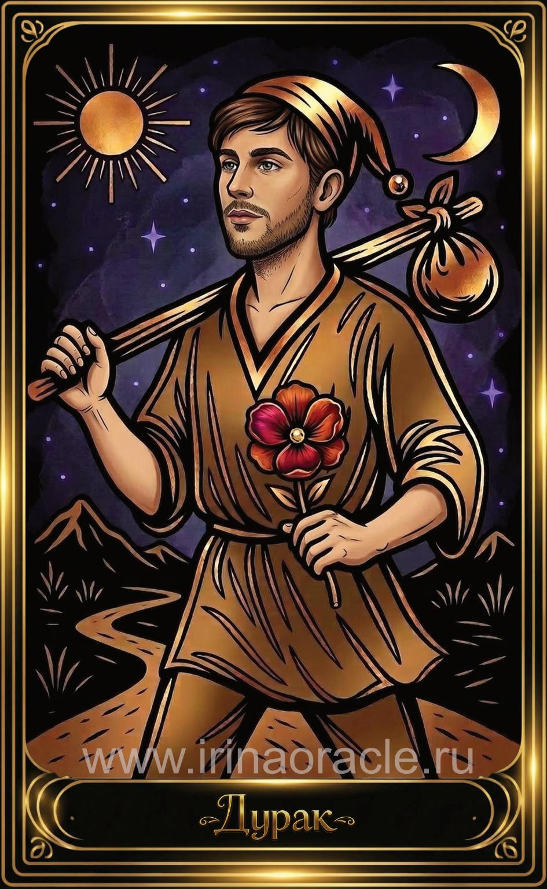

Шут — значение карты Таро
Дурак (Шут) — значение карты Таро

Дурак (Шут) — одна из самых ярких и многослойных карт Таро. Она символизирует начало пути, внутреннюю свободу, доверие миру и способность идти вперёд, даже если дорога ещё не видна. В раскладах Шут появляется тогда, когда человек стоит на пороге перемен, чувствует зов души или готов сделать шаг в неизвестность. Это энергия чистого импульса, вдохновения и искренности, которая открывает новые возможности. Шут напоминает: иногда достаточно просто сделать первый шаг — и путь откроется сам.
Общее значение
Дурак (Шут) — это нулевая карта, точка начала и одновременно состояние полной открытости. Она говорит о том, что человек находится в моменте, когда старые рамки больше не работают, а новые ещё не определены. Это период свободы, поиска, экспериментов и внутреннего обновления.
Карта указывает на новый жизненный этап, смелость следовать за внутренним импульсом, лёгкость, оптимизм и доверие. Шут не обещает стабильности — он обещает движение. Это энергия, которая выводит из застоя и помогает увидеть мир свежим взглядом.
Любовь и отношения
В любовных раскладах Шут приносит лёгкость, игру и искренность. Он может указывать на новое знакомство, романтическое приключение или начало отношений, которые развиваются естественно и без давления. Это энергия живого интереса, флирта и открытого сердца.
В позитивном аспекте карта говорит о радости, спонтанности и ощущении «крыльев за спиной». В тени же может проявляться нежелание брать на себя обязательства, непредсказуемость партнёра или эмоциональная незрелость. Иногда Шут показывает отношения «как получится», без ясного понимания будущего, но с сильным ощущением момента здесь и сейчас.
Работа и финансы
В сфере работы Шут — это начало нового пути. Он указывает на проекты, которые требуют творчества, смелости и нестандартного мышления. Это может быть старт нового дела, смена направления, обучение, стажировка или первые шаги в новой профессии.
Карта говорит о вдохновении, внутреннем интересе и готовности пробовать новое. В финансах Шут предупреждает: важно не тратить импульсивно и не принимать решения, не подумав. Свобода — это не хаос, и карта мягко напоминает о необходимости сохранять здравый смысл, даже если хочется рискнуть.
Здоровье
В вопросах здоровья Дурак (Шут) несёт энергию лёгкости и обновления. Он может указывать на восстановление сил, выход из периода усталости или желание больше двигаться, менять образ жизни, добавлять в него свежесть и свободу.
В то же время карта напоминает о внимательности: излишняя спонтанность, невнимательность к телу или рискованное поведение могут привести к случайным травмам. Шут советует относиться к себе бережно, даже если хочется «прыгнуть в жизнь с разбега».
Совет карты
Совет Шута прост и глубок: доверься процессу и сделай шаг вперёд, даже если путь ещё не ясен. Это карта внутренней свободы, искренности и смелости быть собой. Она поддерживает тех, кто чувствует, что пришло время перемен, но боится сделать первый шаг.
Дурак (Шут) говорит: следуй за вдохновением, не бойся перемен, позволь себе начать сначала и будь открыт новому опыту. Слушай сердце, а не страх — и дорога проявится по мере движения.
Теневая сторона
В тени Дурак (Шут) проявляется как наивность, безответственность и хаотичность. Это состояние, когда человек бежит от обязательств, не хочет думать о последствиях и живёт только сегодняшним днём, игнорируя реальность.
Карта предупреждает о рискованных решениях без анализа, о склонности «прыгать в неизвестность» не из доверия миру, а из нежелания взрослеть. Тень Шута напоминает: свобода прекрасна, но она требует осознанности. Важно отличать живую спонтанность от бегства от ответственности.